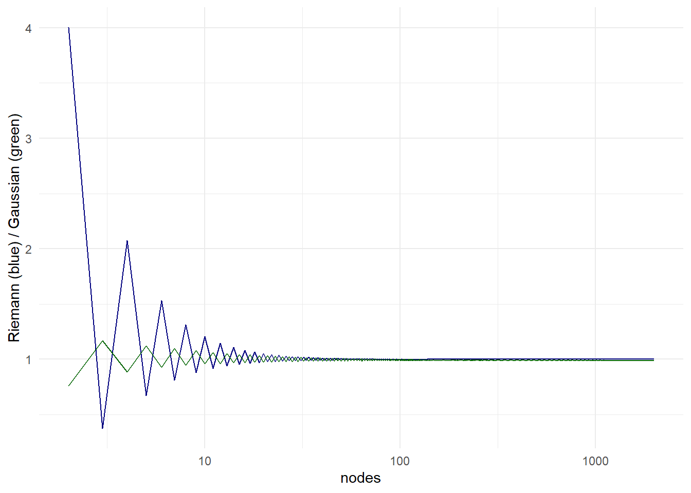
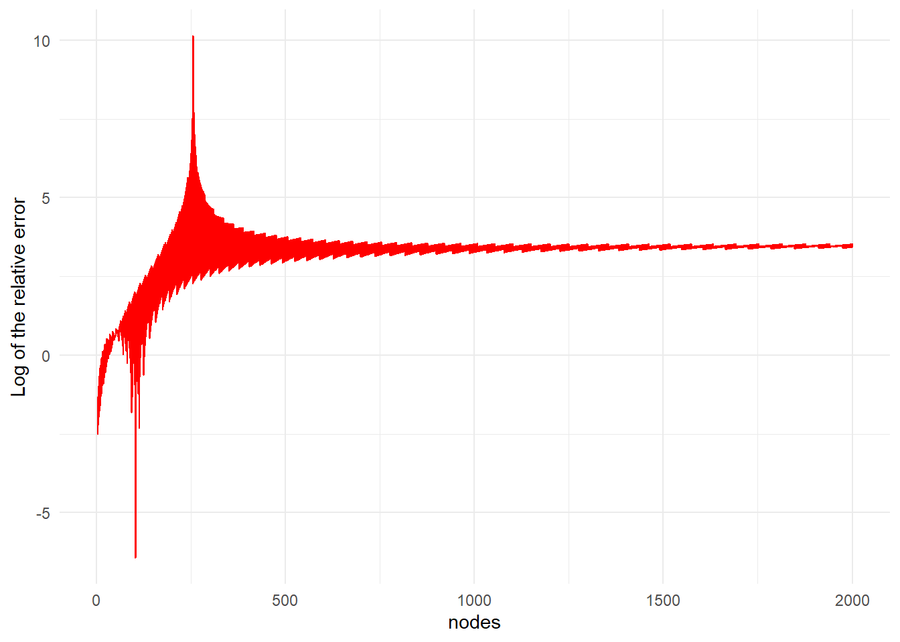

fx <- function(x) (exp(x))/(1+exp(x))^2 * dnorm(x, 0, 1)
fffx <- function(x) -(2*exp(x)/(1+exp(x))^2) - 1
laplace <- fx(0) * sqrt(2*pi) * (-fffx(0))^{-1/2}10 Numerical integration
1. Assume the following integral \[ I = \int^\infty_{-\infty} \frac{e^x}{(1+e^x)^2} \cdot \frac{1}{\sqrt{2\pi}}e^{-\frac{1}{2}x^2} dx. \] The true value of the integral can be assumed to be \(I = 0.20662096414...\). Below, we ask you to use several methods to approximate \(I\) and compare their accuracy. It is advisable to put the results in a single table as to facilitate comparison between methods. Comment on these methods and on the results you find.
a. Use Laplace’s method to approximate the integral.
Solution
Laplace’s method yields that the integral \(f(z)\phi(z)\) is approximated by a normal density. Note that \(\int f(z) \phi(z)dz\) can be written as \(\int e^{h(z)}dz\), where \(\phi(z)\) is the density of the standard normal distribution and \(h(z) = \log(f(z)\phi(z))\). Suppose that \(h(z)\) has a single maximum \(\hat{z}\), such that \(h'(\hat{z}) = 0\) and \(h''(\hat{z}) < 0\). Then, one can use the following second-order Taylor approximation \[ \begin{aligned} h(z) &\approx h(\hat{z}) + (z - \hat{z})h'(\hat{z}) + \frac{1}{2}(z - \hat{z})^2 h''(\hat{z}) \\ &= h(\hat{z}) + \frac{1}{2}(z - \hat{z})^2 h''(\hat{z}). \end{aligned} \] Accordingly, we can define \[ \begin{aligned} \int f(z)\phi(z)dz &= e^{h(z)} dz \\ &\approx e^{h(\hat{z}) + \frac{1}{2}(z - \hat{z})^2 h''(\hat{z})} dz \\ &= f(\hat{z}) \phi(\hat{z}) \sqrt{2\pi}(-h''(\hat{z}))^{ -\frac{1}{2}}. \end{aligned} \] In our case, we have \[ I = \int^\infty_{-\infty} \frac{e^x}{(1+e^x)^2} \cdot \frac{1}{\sqrt{2\pi}}e^{-\frac{1}{2}x^2} dx, \] and thus \(h(x)\) is defined as \[ \begin{aligned} h(x) &= \log(f(x) \phi(x)) \\ &= x - 2\log(1+e^x) - \log(\sqrt{2\pi}) - \frac{1}{2}x^2, \end{aligned} \] where \(\phi(x)\) denotes the standard normal distribution. Accordingly, we have first- and second-order derivative \[ \begin{aligned} h'(x) &= 1 - \frac{2e^x}{1+e^x} - x, \\ h''(x) &= - 2\frac{e^x}{(1+e^x)^2} - 1, \end{aligned} \] Setting the first derivative equal to zero and solving for \(x\) yields \[ \begin{aligned} h'(x) &= 1 - 2\frac{e^x}{1+e^x} - x \\ \implies 1 &= 2\frac{e^x}{1+e^x} - x \\ x &= \frac{1-e^x}{1+e^x} \\ x &= 0. \end{aligned} \] Subsequently, we can fill in the blanks and evaluate \(f(\hat{z}) \phi(\hat{z}) \sqrt{2\pi}(-h''(\hat{z}))^{ -\frac{1}{2}}\):
\[
\begin{aligned}
f(\hat{z}) \phi(\hat{z}) \sqrt{2\pi}(-h''(\hat{z}))^{ -\frac{1}{2}} &= f(0)\phi(0) \sqrt{2\pi}(-h''(0))^{-\frac{1}{2}} \\
&= \frac{e^0}{(1+e^0)^2} \frac{1}{\sqrt{2\pi}}e^0 \\
&= 0.2041241
\end{aligned}
\] In R, this gives is done as follows:
b. Use a Riemannian approximation (with 2, 3 and 4 nodes).
Solution
The Riemannian approximation yields that \(g(z)\) is approximated by dividing the parameter space into several regions, and summing the areas of each region. This yields that \(g(z)\) is approximated in each interval by a constant function (usually \(g(z_q)\)), such that \(\int g(z) dz \approx h \sum^Q_{q=1} g(z_q)\) with weights \(w_q = h\) for all \(q\).
riemann <- function(n, a, b) {
h <- (b-a)/n
z <- seq(a, b, h)
zq <- fx(z)
h*sum(zq)
}
(riemann2 <- riemann(2, -4, 4))[1] 0.3989612(riemann3 <- riemann(3, -4, 4))[1] 0.1444211(riemann4 <- riemann(4, -4, 4))[1] 0.2221554c. Use a trapezoidal approximation (with 2, 3, and 4 nodes).
Solution
The trapezoidal approximation is very closely related to Riemannian approximation, but with a slightly different different sum.
trapezoidal <- function(n, a, b) {
h <- (b - a)/n
z <- seq(a, b, h)
zq <- fx(z)
h/2 * fx(a) + h * sum(zq[-1]) + h/2 * fx(b)
}
(trap2 <- trapezoidal(2, -4, 4))[1] 0.3989612(trap3 <- trapezoidal(3, -4, 4))[1] 0.1444211(trap4 <- trapezoidal(4, -4, 4))[1] 0.2221554d. Use Gauss-Hermite quadrature (with 2, 3, and 4 nodes), with the following nodes and weights.
2 nodes
- Nodes: -1.0; 1.0
- Weights: 0.5; 0.5
3 nodes
- Nodes: −1.732051; 0; 1.732051
- Weights: 0.1666667; 0.666667; 0.1666667
4 nodes
- Nodes: -2.3344142; -0.741938; 0.7419638; 2.3344142
- Weights: 0.04587585; 0.45412415; 0.4512415; 0.04587585
Solution
n2 <- c(-1, 1)
w2 <- c(0.5, 0.5)
n3 <- c(-1.732051, 0, 1.732051)
w3 <- c(0.1666667, 0.666667, 0.1666667)
n4 <- c(-2.3344142, -0.741938, 0.7419638, 2.3344142)
w4 <- c(0.04587585, 0.45412415, 0.4512415, 0.04587585)
gauss <- function(n, w) {
if (length(n) != length(w)) stop("n and w must have the same length!")
sum(w * exp(n)/(1+exp(n))^2)
}
(gauss2 <- gauss(n2, w2))[1] 0.1966119(gauss3 <- gauss(n3, w3))[1] 0.2092427(gauss4 <- gauss(n4, w4))[1] 0.205229Putting everything together, we have:
| Riemannian | Trapezoidal | Gaussian.Quadrature |
|---|---|---|
| 0.3989612 | 0.3989612 | 0.1966119 |
| 0.1444211 | 0.1444211 | 0.2092427 |
| 0.2221554 | 0.2221554 | 0.2052290 |
It is clear that Gaussian quadrature is the most accurate method.
2. The Laplace distribution has as pdf \(f(x) = \frac{1}{2}e^{-|x|}\). Consider the integral \(I = \int \frac{1}{2}e^{-|x|}dx\).
a. Approximate the integral \(I\) with a 4-point Riemannian approximation between -2 and 2.
laplace <- function(x) 1/2 * exp(-abs(x))Let’s first rely on R’s best guess for this interval, by using integrate().
integrate(laplace, -Inf, Inf)1 with absolute error < 5.7e-05It is a proper density function, and should thus integrate to \(1\). Now, let’s see how approximating it with a Riemannian approximation works.
riemann <- function(n, a, b) {
h <- (b - a)/n
z <- seq(a, b, h)
zq <- 1/2 * exp(-abs(z))
h*sum(zq)
}
riemann(10000000, -1000, 1000)[1] 1Breaking the integration region up in small enough functions, we can get quite close to the true answer. Yet, with only 4 points, we’re not doing a great job.
integrate(laplace, -2, 2)0.8646647 with absolute error < 9.6e-15riemann(4, -2, 2)[1] 1.003215That is, we do an okayish job when the aim is to approximate the entire density, but we cut quite some part of the tails, and increasing the number of nodes shows that we indeed miss part of the distribution.
riemann(4, -2, 2)[1] 1.003215b. Approximate the integral \(I\) using a \(3\)-point Gauss-Hermite approximation. (Hint: You need to rewrite the integral).
The Gauss-Hermite approximation works by factoring the density of interest into a some density \(f(x)\) and a standard normal density \(\phi(x)\), which can be done by multiplying and dividing the Laplace density by a normal density. Hence, we have \[
\begin{aligned}
\int f(x) \phi(x) dx &= \int\frac{1}{2} e^{-|x|} \\
&= \int \Bigg( \frac{e^{-|x|}}{2} \Bigg/ \frac{1}{\sqrt{2\pi}} e^{-\frac{x^2}{2}}\Bigg)
\cdot \frac{1}{\sqrt{2\pi}} e^{-\frac{x^2}{2}} \\
&= \frac{\sqrt{2\pi}}{2} \int e^{\frac{x^2}{2} - |x|} \phi(x),
\end{aligned}
\] where \(\phi(x)\) again denotes the standard normal distribution. Subsequently, we can use the R-package npmlreg to obtain the nodes and weights for the Gauss-Hermite approximation.
fx <- function(x) sqrt(2*pi)/2 * exp(x^2/2 - abs(x))
n <- npmlreg::gqz(4)$location
w <- npmlreg::gqz(4)$weight
gauss <- function(n, w) {
sum(w * fx(n))
}
gauss(n, w)[1] 0.883698Then, showing how well the methods work respectively, we can create a plot for an increasing number of nodes.
library(ggplot2)
library(dplyr)
Attaching package: 'dplyr'The following objects are masked from 'package:stats':
filter, lagThe following objects are masked from 'package:base':
intersect, setdiff, setequal, unionlibrary(npmlreg)Warning: package 'npmlreg' was built under R version 4.2.2perf <- data.frame(nodes = 2:2000) |>
mutate(Riemann = sapply(nodes, riemann, a = -8, b = 8),
Gauss = sapply(nodes, function(x) {
n <- npmlreg::gqz(x)$location
w <- npmlreg::gqz(x)$weight
gauss(n, w)
}))
perf |>
ggplot(aes(x = nodes)) +
geom_line(aes(y = Riemann), col = "navy") +
geom_line(aes(y = Gauss), col = "dark green") +
theme_minimal() +
labs(y = "Riemann (blue) / Gaussian (green)") +
scale_x_log10()
perf |>
ggplot(aes(x = nodes, y = log(abs(1-Gauss)/abs(1-Riemann)))) +
geom_line(col = "red") +
theme_minimal() +
labs(y = "Log of the relative error")
Surprisingly, for a sufficient number of nodes, the relative approximation error of the Riemannian approximation is smaller than of the Gauss-Hermite approximation, although the error is small in an absolute sense.
tail(perf) |>
knitr::kable() |>
kableExtra::kable_styling(bootstrap_options = c("striped", "hover"))| nodes | Riemann | Gauss | |
|---|---|---|---|
| 1994 | 1995 | 0.9996632 | 0.9897202 |
| 1995 | 1996 | 0.9996712 | 0.9887065 |
| 1996 | 1997 | 0.9996632 | 0.9896955 |
| 1997 | 1998 | 0.9996712 | 0.9886816 |
| 1998 | 1999 | 0.9996632 | 0.9896707 |
| 1999 | 2000 | 0.9996712 | 0.9886568 |